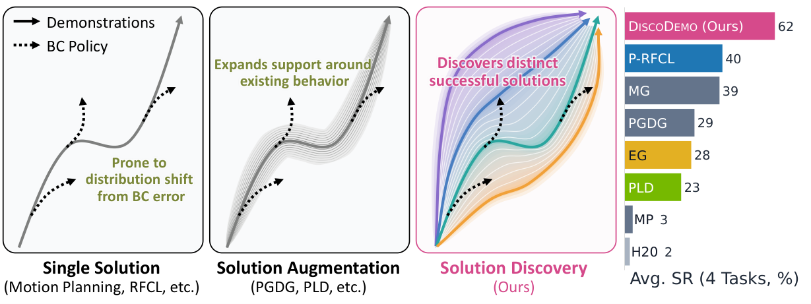
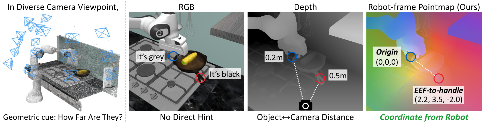
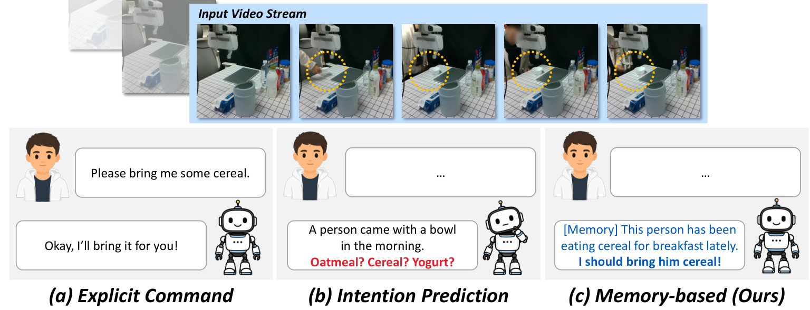
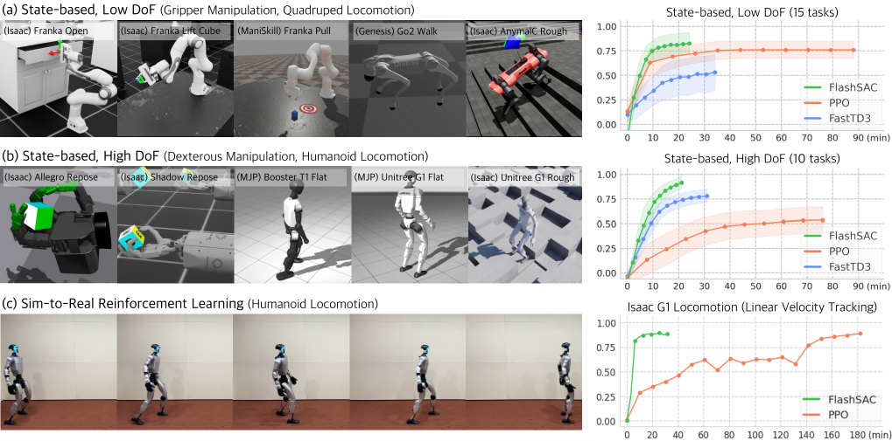
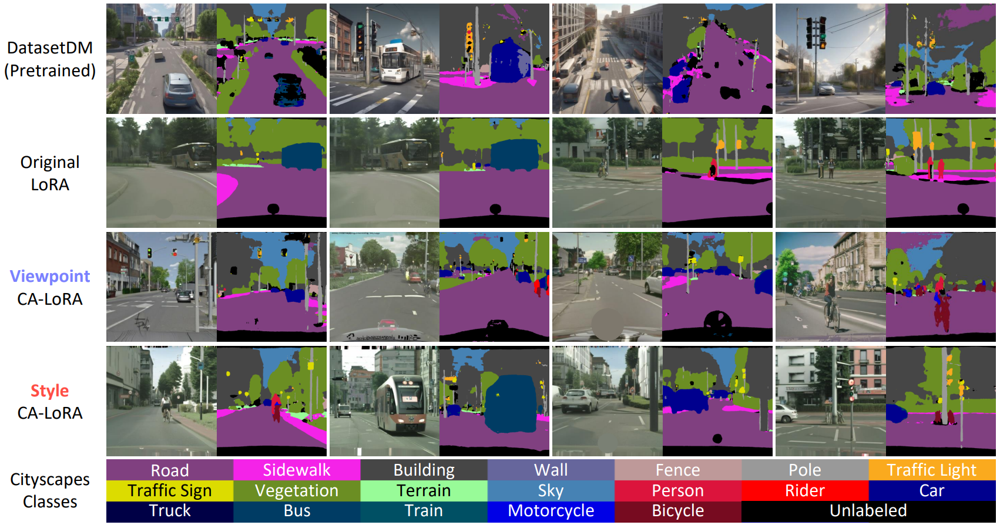
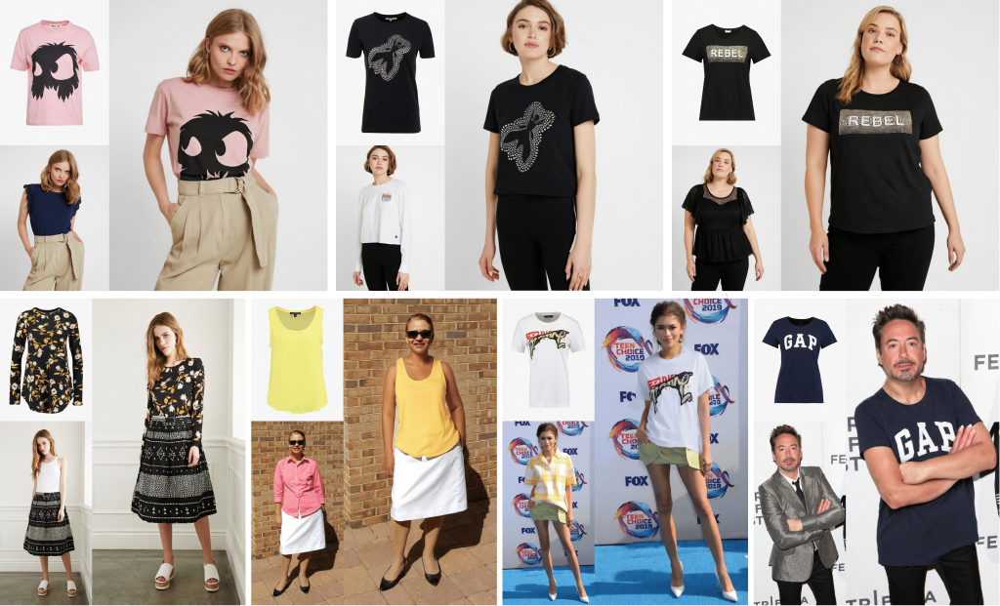

Minho Park
Postdoctoral Researcher, KAIST AI
Robot LearningReinforcement LearningGenerative ModelsData Generation
I am a postdoctoral researcher at KAIST AI (DAVIAN Lab), working with Jaegul Choo, who also advised my Ph.D.
My research asks how generated data can stand in for costly human effort in training AI systems. I started with diffusion models that generate images, videos, and labeled datasets for visual perception, and now work on robot learning: generating diverse robot demonstrations with reinforcement learning, and building vision-language-action (VLA) models that act reliably in the real world.
News
Selected Publications

[NEW]
DiscoDemo: Discovering Efficient and Diverse Robot Demonstrations for Imitation Learning
Minho Park*, Kinam Kim*, Donghu Kim, Byungkun Lee, Dongyoon Hwang, Yongjae Shin,
Junha Hyung, Hojoon Lee†, and Jaegul Choo†
arXiv 2026

[NEW]
See like a Robot: Robot-Centric Pointmaps for VLA Models
Byungkun Lee, Dongyoon Hwang, Dongjin Kim, Hojoon Lee, Hyunseung Kim, Jaegul Choo, and
Minho Park
arXiv 2026
[Paper]

[NEW]
Procedural Assistance Memory for Proactive Robot
Dohyun Lee*, Minho Park*, Jeonghoon Park, Dongyoon Hwang, Junha Hyung, Sungwon Hwang,
Byungkun Lee, and Jaegul Choo
CoRL 2026.
[Code]
[Project Page]
[NEW]
PHUMA: Physically Reliable Humanoid Locomotion Dataset
Kyungmin Lee*, Sibeen Kim*, Youngdo Lee, Minho Park, Hyunseung Kim, Dongyoon Hwang,
Donghu Kim, Hojoon Lee, and Jaegul Choo
CoRL 2026. (Spotlight)
[Paper]
[Code]
[Project Page]
[HF Datasets]

[NEW]
FlashSAC: Fast and Stable Off-Policy Reinforcement Learning for High-Dimensional Robot Control
Donghu Kim*, Youngdo Lee*, Minho Park, Kinam Kim, I Made Aswin Nahendra, Takuma Seno,
Sehee Min, Daniel Palenicek, Florian Vogt, Danica Kragic, Jan Peters, Jaegul Choo, and Hojoon Lee
RSS 2026. (Outstanding Paper Award)
[Paper]
[Code]
[Project Page]
3D HAMSTER: Bridging Planning and Control in Hierarchical Vision Language Action Models through 3D Trajectory
Guidance
Dongyoon Hwang*, Byungkun Lee*, Dongjin Kim*, Hyojin Jang, Hoiyeong Jin, Jueun Mun,
Minho Park, Hojoon Lee, Hyunseung Kim, and Jaegul Choo
IROS 2026.
[Paper]
[Code]
[Project Page]
[HF Models]
ACG: Action Coherence Guidance for Flow-based VLA models
Minho Park*, Kinam Kim*, Junha Hyung, Hyojin Jang, Hoiyeong Jin, Jooyeol Yun, Hojoon
Lee†, and Jaegul Choo†
ICRA 2026, Vienna, Austria.
[Paper]
[Code]
[Project Page]
[HF Models]
[Youtube]
EgoX: Egocentric Video Generation from a Single Exocentric Video
Taewoong Kang*, Kinam Kim*, Dohyeon Kim*, Minho Park, Junha Hyung, and Jaegul Choo
CVPR 2026, Denver CO, USA.
[Paper]
[Code]
[Project Page]
[HF Models]
SphereDiff: Tuning-free Omnidirectional Panoramic Image and Video Generation via Spherical Latent Representation
Minho Park*, Taewoong Kang*, Jooyeol Yun, Sungwon Hwang, and Jaegul Choo
AAAI 2026, Singapore. (Oral Presentation)
[Paper]
[Code]
[Project page]

CA-LoRA: Concept-Aware LoRA for Domain-Aligned Segmentation Dataset Generation
Minho Park, Sunghyun Park, Jungsoo Lee, Hyojin Park, Kyuwoong Hwang,
Fatih Porikli, Jaegul Choo, and Sungha Choi
Work done during an internship at Qualcomm AI Research.
CVPR 2026, Denver CO, USA.
[Paper]

StableVITON: Learning Semantic Correspondence
with Latent Diffusion Model for Virtual Try-On
Jeongho Kim, Gyojung Gu, Minho Park, Sunghyun Park, and Jaegul Choo
CVPR 2024, Seattle WA, USA.
[Paper]
[Code]
[Project page]

Learning to Generate Semantic Layouts for Higher Text-Image Correspondence in Text-to-Image
Synthesis
Minho Park*, Jooyeol Yun*, Seunghwan Choi, and Jaegul Choo
ICCV 2023, Paris, France.
[Paper]
[Code]
[Project page]

iColoriT: Towards Propagating Local Hint to the Right Region in Interactive Colorization by
Leveraging Vision Transformer
Jooyeol Yun*, Sanghyeon Lee*, Minho Park*, and Jaegul Choo
WACV 2023, Waikoloa, Hawaii.
[Paper]
[Code]
[Project page]
Work Experience
Academic Activities
Conference Reviewers: CVPR, ICCV, ICLR, NeurIPS, ICML, CoRL, AAAI, etc.